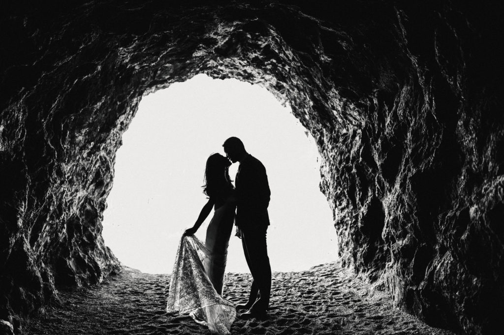

Camera Moves
Incorporating diverse camera movements into your shots can enhance visual appeal and engage your audience more effectively. Pair this with a thoughtful approach to messaging, and you'll be well on your way to success.
When working with camera movements, choose carefully to ensure they align with the tone and purpose of your scene. Each movement carries a unique impact, shaping the viewer's emotional connection and level of immersion, making these decisions crucial for crafting a compelling experience.
Focus
Focus is key to achieving sharp, professional-looking images in video production. Automatic focus is convenient but limits creative control, while manual focus allows precise adjustments for better quality and detail. To maintain consistent focus, zoom in on a detailed subject to set the focus, then zoom out to your desired framing. This ensures clarity throughout the shot, making your videos visually engaging and impactful.

Hand-Held Camera Work
To capture stable handheld footage, keep the camera at its widest angle, as zooming in magnifies any movement and increases shakiness. Modern cameras often include stabilization features, marked by a hand icon, to help counteract motion and improve stability. Activating this feature allows you to achieve smoother shots without relying on extra equipment like tripods or gimbals, making it ideal for dynamic or on-the-go filming.

Create a 1-2 minute video where you interview a classmate or record yourself sharing your favorite part of school. Use at least three basic shots: a wide shot to show the environment, a medium shot for the person speaking, and a close-up shot to capture their expression. Ensure good lighting, clear audio, and edit the video to flow smoothly. Submit your final video, showcasing your ability to use basic camera shots effectively.